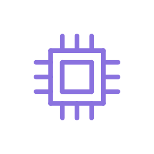

如何调用高级 AI 模型Itoc 的 AI 功能（「AI 协作」和「電籽 AI 助手」）默认使用 OrcaRouter 提供的免费模型。免费模型无需登录、无限使用，但有两个明显的短板：
- 智商较低：复杂工程容易给错 Search/Replace，或者干脆胡编字段名。
- 单次 token 少：工程稍微大一点，或者勾了“完整工程 JSON”，就容易超限。
如果你想让 AI 更聪明、能处理更复杂的工程，就需要调用高级模型。这篇文档把三条路线都讲清楚：
- OrcaRouter 付费额度（官方内置支持，最省事）
- OrcaRouter BYOK（自带 Key）
- 任意 OpenAI 兼容 API（最灵活，比如你自己的中转站、公司内网网关）
· Itoc 本身是完全免费、用爱发电的项目。AI 功能只是额外附加选项，不强制消费。
· 付费模型的费用、充值、服务质量，全部由第三方提供商（比如 OrcaRouter）负责，和 Itoc 作者无关。用不用、买不买，完全看你自己的需求。
一、高级模型和免费模型的区别
| 免费模型 | 高级模型（付费/自带 Key） | |
|---|---|---|
| 是否需要登录 | 不需要 | 需要在提供商那边注册/登录 |
| 是否需要付费 | 不需要 | 需要充值，或使用你自己的 API Key |
| 单次 token 上限 | 较低 | 较高，能塞下更完整的工程 JSON + 语法文档 |
| 复杂任务表现 | 容易给错 Search/Replace | 明显更稳 |
| 适合场景 | 简单字段修改、聊天、看工程摘要 | 复杂重构、批量改结构、大工程分析 |
二、前置：打开「AI 模型配置」窗口
不管走哪条路线，最终都要在「AI 模型配置」窗口里改配置。这个窗口通常挂在 AI 相关菜单或设置里，具体入口以你的版本为准。
窗口从上到下分成几块：
| 区域 | 内容 |
|---|---|
| 顶部提示 | 橙色说明文字：“Itoc默认使用免费AI模型，优点：无需登录、无限使用，缺点：辣鸡智商、单次token少，无法协作复杂工程。。。（付费模型由第三方 OrcaRouter 提供，与Itoc作者我无关，绝不强制消费）” |
| API 设置 | API Key 输入框、Base URL 输入框 |
| 模型列表 | 列表，显示 名称 [id]；右侧有「添加」「编辑」「删除」按钮 |
| 当前模型 | 下拉框，选择当前使用的模型 |
| 底部按钮 | 💎 购买付费模型额度、?、保存、取消 |
点「保存」会把配置写回 orcarouterAI.json；点「取消」不保存。
三、路线 A：OrcaRouter 付费额度（官方内置，最省事）
这是 Itoc 内置支持最完整的一条路。OrcaRouter 是第三方 AI 路由服务，Itoc 通过它来调用模型。
根据窗口里的帮助说明：“此合作由 OrcaRouter 官方主动邀请发起”。
邀请详情可以在「AI 模型配置」窗口里点「?」按钮，再点「📄 查看 OrcaRouter 官方邀请详情」查看，链接指向作者的 B 站动态。
3.1 操作步骤
- 打开「AI 模型配置」窗口。
- 点左下角「💎 购买付费模型额度」按钮，会跳转到 OrcaRouter 的注册/购买页面（带作者的推广链接）。
- 注册/登录你的 OrcaRouter 账号。
- 在 OrcaRouter 控制台充值，或绑定你自己的 API Key（BYOK）。
- 拿到你的 API Key。
- 回到 Itoc 的「AI 模型配置」窗口：
- 把 API Key 填成你自己的 Key。
- Base URL 保持
https://api.orcarouter.ai/v1（除非官方通知变更）。
- 点右侧「添加」按钮，在子窗口里填：
- 模型名称：随便起，方便你认，比如“GPT-4o (OrcaRouter)”。
- 模型 ID：必须和 OrcaRouter 控制台里显示的模型 ID 完全一致，比如
openai/gpt-4o、anthropic/claude-3.5-sonnet之类（以官方文档为准）。
- 点「确定」，新模型会出现在列表里。
- 在「当前模型」下拉框里选中它。
- 点「保存」。
之后打开「AI 协作」或「電籽 AI 助手」，模型下拉框里就会多出你刚添加的模型，选中即可使用。
3.2 注意事项
- 模型 ID 必须一字不差。不同提供商对模型 ID 的写法不同，填错会报“model not found”。
- Base URL 不要漏了
/v1。OpenAI 兼容接口的 base_url 通常以/v1结尾。 - API Key 不要泄露。它会以明文形式存在
orcarouterAI.json里，分享工程时注意别把配置一起发出去。
四、路线 B：OrcaRouter BYOK（自带 Key）
如果你已经有自己的 OpenAI / Anthropic / 其它厂商的 API Key，并且 OrcaRouter 支持 BYOK（Bring Your Own Key），可以这样：
- 在 OrcaRouter 控制台绑定你的 Key。
- 在 Itoc 的「AI 模型配置」里：
- API Key 填 OrcaRouter 给你的 Key（不是原始厂商的 Key）。
- Base URL 保持 OrcaRouter 的地址。
- 添加模型时，模型 ID 用 OrcaRouter 文档里对应的写法。
- 保存。
BYOK 的好处是你可以用自己熟悉的厂商模型，同时通过 OrcaRouter 统一路由。具体支持哪些模型、怎么绑定，请以 OrcaRouter 官方文档为准。
五、路线 C：任意 OpenAI 兼容 API（最灵活）
Itoc 的 AI 请求走的是标准 OpenAI 接口：填好 api_key 和 base_url 之后，向 /v1/chat/completions 发一个包含 model 和 messages 的请求，等它一次性返回完整结果（不流式），超时 90 秒。
这意味着：只要一个服务兼容 OpenAI 的 /v1/chat/completions 接口，理论上都能接进来。比如：
- 你自己的中转站/代理
- 公司内网的 OpenAI 兼容网关
- 其它云厂商提供的 OpenAI 兼容接口
- 本地部署的兼容服务（比如某些 Ollama / vLLM 的 OpenAI 兼容模式）
5.1 操作步骤
- 确认你的服务支持
POST /v1/chat/completions，并且返回结构兼容 OpenAI。 - 打开「AI 模型配置」窗口。
- 把 API Key 换成你的服务的 Key。
- 把 Base URL 换成你的服务的地址，记得带
/v1，比如https://your-gateway.example.com/v1。 - 点「添加」，填：
- 模型名称：随便起。
- 模型 ID：你的服务实际接受的模型名，比如
gpt-4o-mini、qwen2.5-72b-instruct。
- 在「当前模型」里选中它。
- 点「保存」。
5.2 兼容性检查清单
| 项目 | 要求 |
|---|---|
| 接口路径 | /v1/chat/completions |
| 请求体 | 至少支持 model、messages、stream=false |
| 响应体 | 至少包含 choices[0].message.content |
| 鉴权 | Authorization: Bearer <API Key> |
| 超时 | Itoc 默认 90 秒超时，太慢的服务会被判定失败 |
如果服务不支持
stream=false，或者返回结构不一样，Itoc 会报错（通常是 AI 请求失败：...）。这种情况下，建议先用
curl 或 Postman 手动请求一次，确认返回结构和 OpenAI 一致，再填进 Itoc。
六、配置文件详解：orcarouterAI.json
所有 AI 配置都保存在程序目录下的 orcarouterAI.json。结构如下：
{
"api_key": "sk-orca-...",
"base_url": "https://api.orcarouter.ai/v1",
"models": [
{ "name": "免费模型 Deepseek (OrcaRouter)", "id": "orcarouter/free" },
{ "name": "自动路由 (OrcaRouter)", "id": "orcarouter/auto" },
{ "name": "GPT-4o (OrcaRouter)", "id": "openai/gpt-4o" }
],
"current_model": "orcarouter/free"
}| 字段 | 类型 | 说明 |
|---|---|---|
api_key | 字符串 | API Key，明文保存 |
base_url | 字符串 | OpenAI 兼容接口地址，通常以 /v1 结尾 |
models | 数组 | 模型列表，每项包含 name（显示名）和 id（模型 ID） |
current_model | 字符串 | 当前选中的模型 ID |
文件不存在时，程序会用内置默认值：
{
"api_key": "sk-orca-...",
"base_url": "https://api.orcarouter.ai/v1",
"models": [
{ "name": "免费模型 Deepseek (OrcaRouter)", "id": "orcarouter/free" },
{ "name": "自动路由 (OrcaRouter)", "id": "orcarouter/auto" }
],
"current_model": "orcarouter/free"
}可以，但更推荐用「AI 模型配置」窗口改。手动改的时候注意 JSON 格式，字段名别拼错，
current_model 必须是 models 里某个 id 的值。
七、模型命名与 ID 的注意事项
- 名称可以随便起，只是给你自己看的。
- ID 必须和提供商那边一致，大小写、连字符、斜杠都不能错。
- 同一个 ID 不要重复添加，虽然程序不强制去重，但列表里会出现两条一样的。
- 删除正在使用的模型后，记得在「当前模型」里重新选一个，否则请求会失败。
八、如何确认配置生效？
- 打开「AI 协作」或「電籽 AI 助手」。
- 看模型下拉框里有没有你新加的模型。
- 选中它，发一句简单的话测试，比如“你好”。
- 如果回复正常，说明配置成功；如果报错，按下面的常见问题排查。
九、常见问题
Q1：点了「💎 购买付费模型额度」没反应？
A：它会用系统默认浏览器打开 OrcaRouter 的推广链接。如果没反应，检查系统默认浏览器是否正常，或者手动复制链接到浏览器打开。
Q2：添加模型后，下拉框里没出现？
A：确认你点了「保存」。保存后会写回 orcarouterAI.json。如果还是没出现，重启一下对应的 AI 窗口（关掉再打开）呀。
Q3：报“model not found”或类似错误？
A：模型 ID 填错了。去提供商的官方文档里确认准确的模型 ID，注意大小写和斜杠。
Q4：报“401 Unauthorized”？
A：API Key 不对或已失效。检查 Key 是否复制完整，是否有多余空格，是否过期啦。
Q5：报“404 Not Found”？
A：Base URL 不对。检查是否漏了 /v1，或者路径多写了 /chat/completions（Itoc 会自己拼）。
Q6：报“timeout”或请求超时？
A：Itoc 默认 90 秒超时。如果模型响应很慢，或者网络不好，就会超时。可以换更快的模型，或者检查网络。
Q7：免费模型还能继续用吗？
A：能。免费模型是默认配置，只要不删掉 orcarouter/free，随时可以在下拉框里切回去。
Q8：我的 API Key 会泄露吗？
A：它明文保存在 orcarouterAI.json 里。分享工程、截图、发日志时注意别把配置文件或 Key 一起发出去。如果怀疑泄露，去提供商那边重置 Key。
Q9：能同时用多个提供商的模型吗？
A：Itoc 的 AI 请求只有一份 api_key 和 base_url，所以同一时刻只能连一个提供商。想用多家，只能改配置切换，不能同时。
Q10：高级模型一定比免费模型好吗？
A：不一定。高级模型通常更聪明、token 更多，但也要看具体模型和任务。简单字段修改，免费模型也够用；复杂重构，高级模型优势明显。建议先用免费模型试，不够用再升级。(๓´˘`๓)
十、小结
调用高级 AI 模型有三条路：
- OrcaRouter 付费额度：点「💎 购买付费模型额度」→ 注册/充值 → 填 API Key → 添加模型 → 保存。最省事。
- OrcaRouter BYOK：在 OrcaRouter 绑定你自己的 Key → 填 OrcaRouter 的 API Key 和 Base URL → 添加模型 → 保存。
- 任意 OpenAI 兼容 API：填你的 API Key 和 Base URL（带
/v1）→ 添加模型 → 保存。最灵活。
配置统一保存在 orcarouterAI.json，字段是 api_key、base_url、models、current_model。
记住：Itoc 本身免费，AI 付费模型是第三方提供的可选增强，不强制消费。免费模型够用就继续用，不够用再升级喵 ( ⓛ ω ⓛ *)